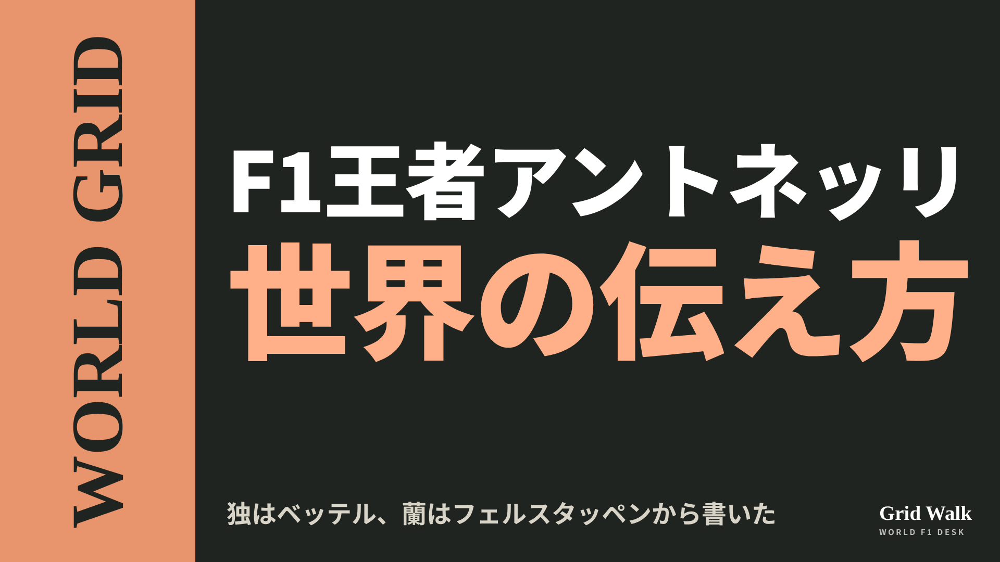
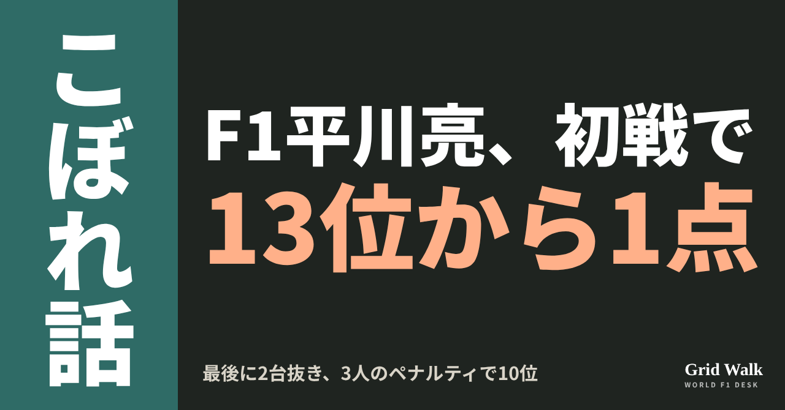
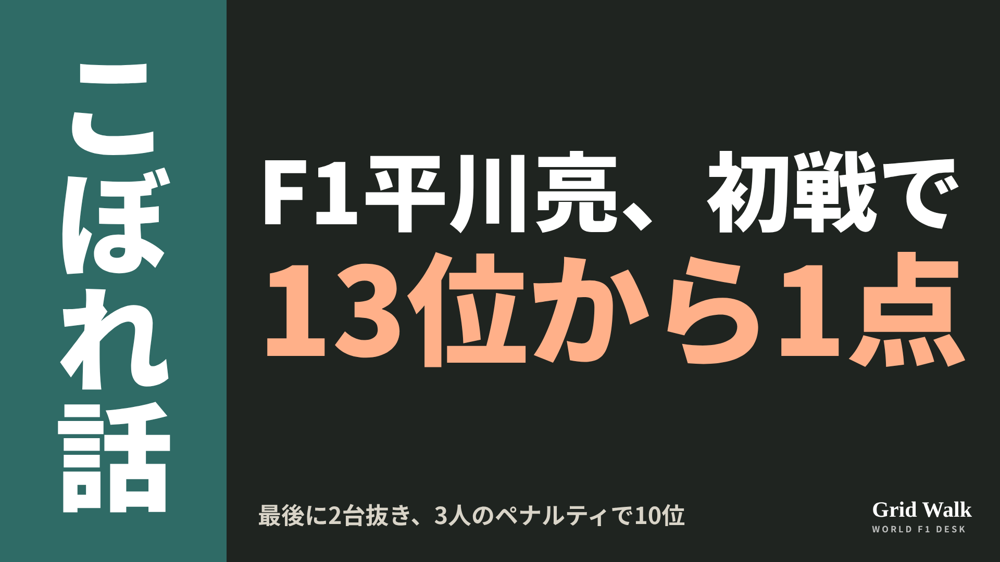
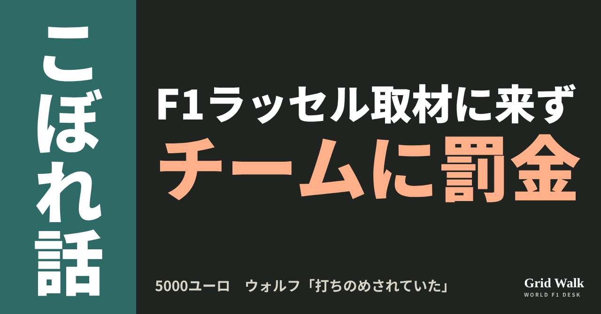
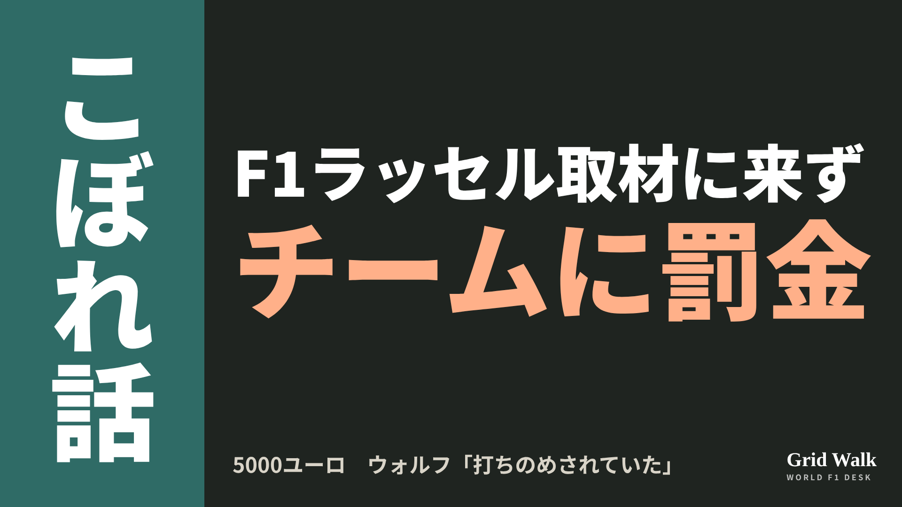
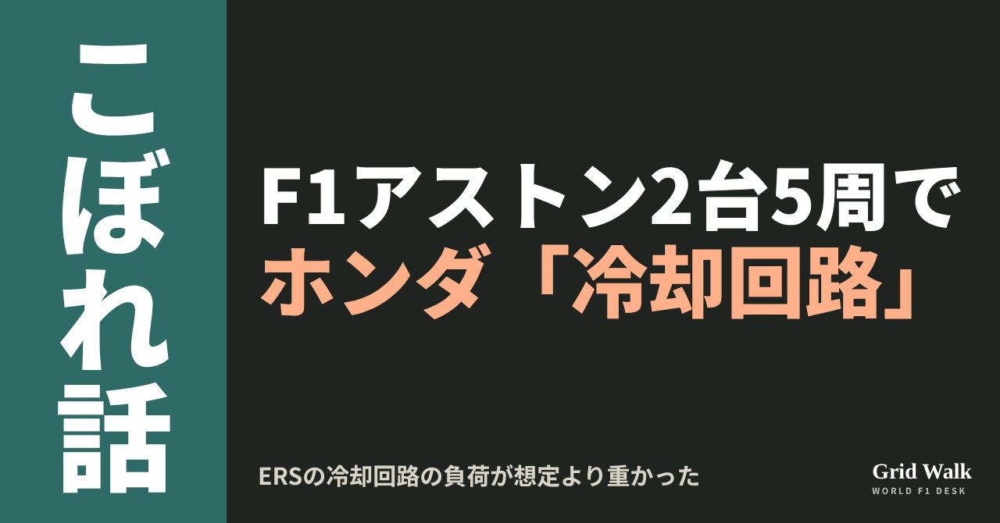
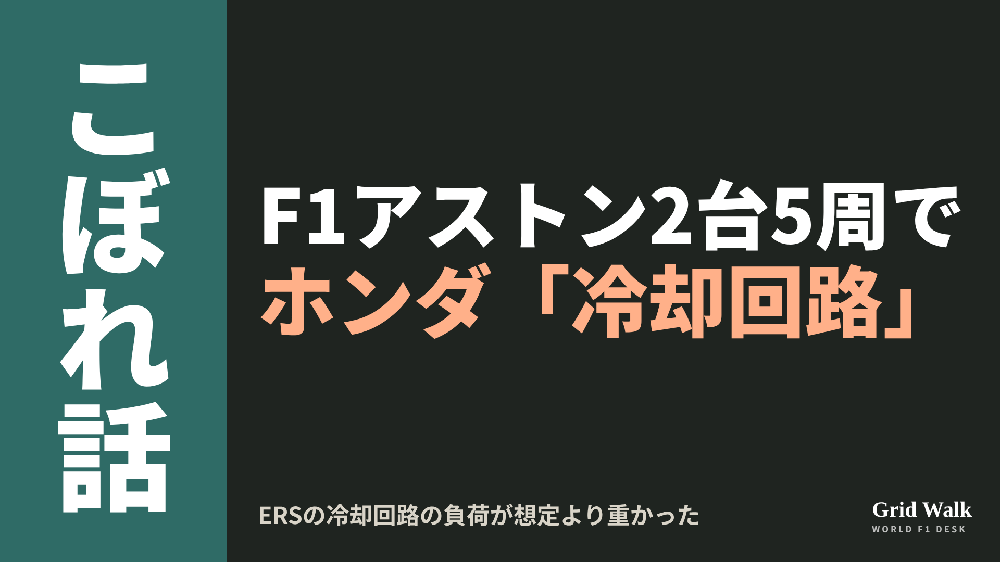
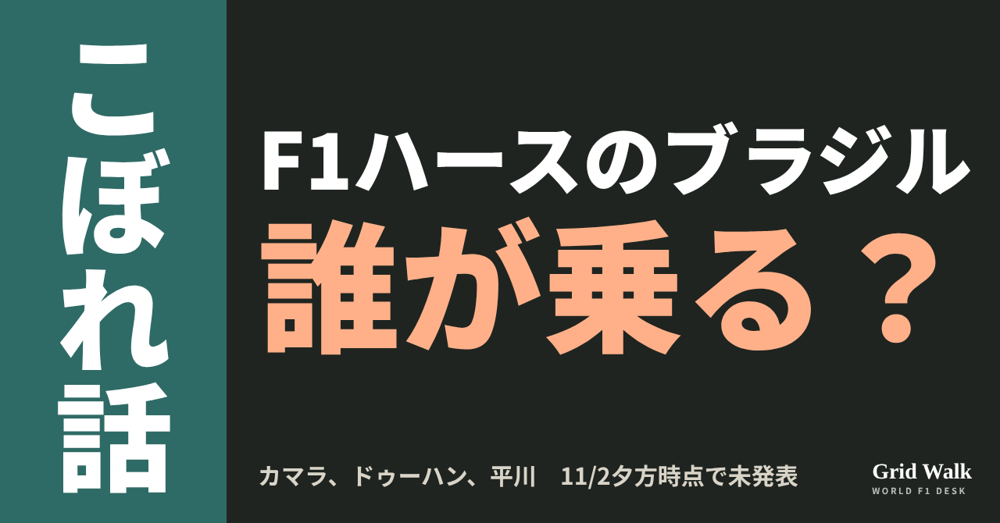
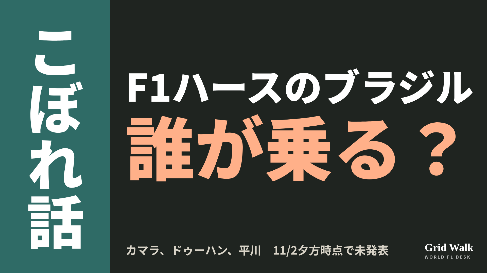

<meta charset="utf-8"><title>11/2夕方のコラム note貼り付け</title>
<style>
/* one column of numbered paste steps; text steps vs image steps differ by marker */
:root{--bg:#F5F4F0;--card:#FFFFFF;--ink:#1D2321;--mute:#5F665F;--line:#DCDAD2;--btn:#1F5FBF;--btnok:#2E8B4F;--img:#E9F3EC;--imgink:#22663B;--sans:'IBM Plex Sans JP','Hiragino Sans','Noto Sans JP',sans-serif}
@media (prefers-color-scheme:dark){:root:not([data-theme="light"]){--bg:#171A19;--card:#202423;--ink:#ECEDE8;--mute:#A3AAA2;--line:#343937;--btn:#4D8BE6;--btnok:#3FA866;--img:#1E2C23;--imgink:#8FD3A6;color-scheme:dark}}
:root[data-theme="dark"]{--bg:#171A19;--card:#202423;--ink:#ECEDE8;--mute:#A3AAA2;--line:#343937;--btn:#4D8BE6;--btnok:#3FA866;--img:#1E2C23;--imgink:#8FD3A6;color-scheme:dark}
body{background:var(--bg);color:var(--ink);font-family:var(--sans);font-size:15px;line-height:1.75;padding:20px 16px 60px}
main{max-width:680px;margin:0 auto;display:grid;gap:28px}
header h1{font-size:22px;margin:0 0 6px;text-wrap:balance}
header p{margin:0;color:var(--mute);font-size:14px}
nav{display:flex;gap:8px;flex-wrap:wrap;margin-top:12px}
nav a{border:1px solid var(--line);border-radius:999px;padding:4px 14px;color:var(--ink);text-decoration:none;font-size:14px;background:var(--card)}
.part h2{font-size:18px;line-height:1.5;margin:0 0 12px;text-wrap:balance;display:flex;gap:10px;align-items:baseline;flex-wrap:wrap}
.tag{font-size:13px;background:var(--ink);color:var(--bg);border-radius:6px;padding:1px 9px}
.steps{list-style:none;margin:0;padding:0;display:grid;gap:12px}
.st{background:var(--card);border:1px solid var(--line);border-radius:12px;padding:12px;min-width:0}
.hd{display:flex;align-items:center;gap:8px;margin-bottom:8px}
.no{width:26px;height:26px;border-radius:50%;background:var(--btn);color:#fff;display:inline-flex;align-items:center;justify-content:center;font-size:13px;font-weight:700;flex:0 0 26px}
.im .no{background:var(--btnok)}
.hd em{font-style:normal;font-size:12px;background:var(--img);color:var(--imgink);border-radius:6px;padding:0 8px}
.bx{font-size:13.5px;line-height:1.7;border:1px solid var(--line);border-radius:8px;padding:8px 10px;max-height:110px;overflow:auto;overflow-wrap:anywhere}
.bx.tall{max-height:150px}.bx p{margin:0 0 6px}.bx h2{font-size:14px;margin:8px 0 4px}.bx a{color:var(--btn)}
.st img{display:block;width:100%;max-width:100%;border:1px solid var(--line);border-radius:8px}
.sub{font-size:12.5px;color:var(--mute);margin:6px 0 0}
.cp{width:100%;margin-top:8px;padding:12px;border:0;border-radius:10px;background:var(--btn);color:#fff;font:600 15px var(--sans);cursor:pointer}
.cp.ok{background:var(--btnok)}.cp.dl{background:var(--btnok)}.cp:focus-visible{outline:3px solid var(--ink);outline-offset:2px}
.xh{font-size:15px;margin:20px 0 10px}
.fb{font-size:13px;line-height:1.7;margin:8px 0 0;padding:8px 10px;border-radius:8px;background:var(--img);color:var(--imgink)}
.opts{display:grid;grid-template-columns:repeat(auto-fill,minmax(240px,1fr));gap:10px}
.opt{min-width:0}.opt img{display:block;width:100%;border:1px solid var(--line);border-radius:8px}
.ol{display:flex;align-items:center;gap:8px;margin-top:6px}.ol b{font-size:13px;flex:0 0 auto}.ol .on{font-size:12.5px;color:var(--mute);flex:1;min-width:0}.ol .cp{width:auto;flex:0 0 auto;padding:9px 14px}.ol .cp{margin:0;padding:9px}
.toast{font-size:13px;color:var(--mute);margin-top:6px}
</style>
<main><header><h1>11/2夕方のコラム note貼り付け</h1><p>いま公開済みは5本です。青い番号は文章、緑は画像です。</p><nav><a href="#p1">1</a><a href="#p2">2</a><a href="#p3">3</a><a href="#p4">4</a><a href="#p5">5</a></nav></header><section class="part" id="p1"><h2><span class="tag">WORLD GRID</span>アントネッリ王座、独はベッテル・蘭はフェルスタッペンから書いた</h2><p class="sub">サイトに公開：16:55</p><ol class="steps">
<li class="st im"><div class="hd"><span class="no">1</span><b>見出し画像</b><em>画像</em></div><button class="cp dl" data-img="img/antonelli-title-world-20261102.png" data-name="antonelli-title-world-20261102_見出し画像.png">ダウンロード</button></li>
<li class="st"><div class="hd"><span class="no">2</span><b>タイトル</b></div><div class="bx" id="p1t">アントネッリ王座、独はベッテル・蘭はフェルスタッペンから書いた</div><button class="cp" data-plain="p1t">タイトルをコピー</button></li>
<li class="st"><div class="hd"><span class="no">3</span><b>本文</b></div><div class="bx tall" id="p1r"><p>日本時間2日朝のメキシコシティGPで、アントネッリ（メルセデス）の王座が決まりました。同じ「王座決定」でも、真っ先に書いたことは国によって違います。イタリアの通信社ANSAは「アスカリから73年」、ドイツの公共放送ZDFは、リードの一文目が「セバスチャン・ベッテルは記録を失った」。オランダでは、見出しの先頭はレースに勝ったフェルスタッペン（レッドブル）でした。</p><p>各国の元の記事へのリンクと、王座を伝えた海外記事の要約はサイトで → <a href="https://f1gridwalk.github.io/lens/antonelli-title-world-20261102/?utm_source=note&amp;utm_campaign=antonelli-title-world-20261102">https://f1gridwalk.github.io/lens/antonelli-title-world-20261102/?utm_source=note&amp;utm_campaign=antonelli-title-world-20261102</a></p><p>アントネッリは3位で380点。2位のフェルスタッペンは261点です（F1公式）。残りは4戦で、取れるのは最大100点です。F1公式サイトの見出しは「史上最年少のF1王者」でした。</p><h2>イタリアは「73年」と「最年少」を両方</h2><p>ANSAの見出しは「アントネッリがF1世界王者に、イタリア人としてアスカリから73年」。イル・ファット・クオティディアーノは「史上最年少、73年ぶりのイタリア人」とし、副題では「ボローニャの才能」と呼びました。コリエレ・デッロ・スポルトは「ベッテルの記録を打ち砕く」と書いています。</p><p>レース前のイタリアの記事が前に出したのは「アスカリから73年」でした（コラム https://f1gridwalk.github.io/lens/mexico-title-preview-20261029/ ）。決まった夜は、「最年少」と並びました。</p><p>地元紙イル・レスト・デル・カルリーノによると、地元カザレッキオ・ディ・レーノの劇場に約500人が集まり、ボローニャのレポーレ市長は「キミにネットゥーノ・ドーロを贈る」と話しました。</p><h2>ドイツはベッテル、オランダはフェルスタッペン</h2><p>ZDFの見出しは「アントネッリ、史上最年少の世界王者」で、リードの一文目が「セバスチャン・ベッテルは記録を失った」です。ドイツのスカイは「メルセデスの神童、メキシコで歴史を書く」とし、メルセデスにとって2020年以来のドライバーズ王座だと書きました。</p><p>オランダのGPblogは「フェルスタッペン、しびれる戦いでハミルトンを破る、アントネッリ世界王者」。ただリードでは、王座のほうが「ずっと大事」と書いています。公共放送NOSも「フェルスタッペンがメキシコで優勝・アントネッリが史上最年少の世界王者」の順で、アメリカのESPNも同じでした。</p><p>地元メキシコのRécordは「新しい世界王者！ キミ・アントネッリがメキシコで戴冠、フェルスタッペンがグランプリ優勝」。副題は地元のペレス（キャデラック）で、本文は「歴史をつくるのに年齢は関係ない」で始まります。イギリスのBBCは、見出しはアントネッリが先でも、本文の1文目でフェラーリ内の緊張に触れました。</p><p>スペインのアレルタ紙は、スペインのMARCAが伝えたアロンソの言葉を引いています。</p><blockquote><p>「偉大な王者だし、ほとんどミスなく完璧に近かった。すごいことだ」（アロンソ、MARCAの報道をアレルタが引用／スペイン）</p></blockquote><h2>数字も言葉も、少しずつ違う</h2><p>ベッテルの記録をどれだけ縮めたかは、BBCが「3年67日」、ESPNは「3年65日」。年齢も、ZDFやESPNは「20歳68日」、コリエレは「20歳2か月7日」と数え方が違います。</p><p>減速走行中の無線で本人が言った「Thank you so much. We did it. We did it.」（BBC）と同じ言葉が、NOSではオランダ語、CNN Brasilではポルトガル語で伝えられました（CNN Brasilの記事の要約は https://f1gridwalk.github.io/news/pt-cnnbrasil-antonelli-campeao-mexico/ ）。レース後には、こう話しています。</p><blockquote><p>「やり遂げました。彼らがいなければ、僕はここにいません。メルセデスがいなければ、家族がいなければ」（アントネッリ、F1公式サイト）</p></blockquote><p>編集部としては、どこを先に書くかに、それぞれの国の関心がにじんだと見ています。</p><p><strong>あなたが見出しを付けるなら、「最年少」「73年ぶり」「フェルスタッペン優勝」のどれを先頭にしますか？</strong></p><p>━━━━━━━━━━</p><p><strong>F1 Grid Walk では、世界のF1ニュースを毎日日本語でまとめています。</strong></p><p>海外の記事の要約を、毎日載せています。</p><p><a href="https://f1gridwalk.github.io/">https://f1gridwalk.github.io/</a></p><p>ほかの海外記事も読みたい方は、F1 Grid Walkへ。</p><p><a href="https://f1gridwalk.github.io/lens/antonelli-title-world-20261102/">https://f1gridwalk.github.io/lens/antonelli-title-world-20261102/</a></p><p>━━━━━━━━━━</p><p><a href="https://www.formula1.com/en/latest/article/antonelli-crowned-youngest-ever-f1-champion-as-verstappen-wins-eventful-mexico-city-grand-prix.xpMMeef0KmRURs9IDs3LH">出典：Formula 1 公式（イギリス）</a></p><p><a href="https://www.formula1.com/en/latest/article/this-moment-will-live-forever-antonelli-shares-touching-reaction-to-incredible-world-championship-victory-in-mexico-city.zU8TYn4f00R4YcOAfOK1m">出典：Formula 1 公式（イギリス）</a></p><p><a href="https://www.formula1.com/en/results/2026/drivers">出典：Formula 1 公式（イギリス）</a></p><p><a href="https://www.formula1.com/en/results/2026/races/1298/mexico/race-result">出典：Formula 1 公式（イギリス）</a></p><p><a href="https://www.ansa.it/sito/notizie/topnews/2026/11/01/antonelli-e-campione-del-mondo-di-f1-un-italiano-73-anni-dopo-ascari_a9324b3b-909a-4630-8010-ed0eac014cf3.html">出典：ANSA（イタリア）</a></p><p><a href="https://www.ilfattoquotidiano.it/2026/11/01/antonelli-campione-mondo-f1-2026-notizie/8557180/">出典：Il Fatto Quotidiano（イタリア）</a></p><p><a href="https://www.corrieredellosport.it/news/formula-1/2026/11/01-152300116/da_farina_ad_antonelli_che_straccia_il_record_di_vettel_a_20_anni_gi_nella_storia_della_formula_uno">出典：Corriere dello Sport（イタリア）</a></p><p><a href="https://www.ilrestodelcarlino.it/bologna/cronaca/kimi-e-mondiale-citta-in-15a8869b">出典：Il Resto del Carlino（イタリア）</a></p><p><a href="https://www.zdfheute.de/sport/formel-1-gp-mexiko-kimi-antonelli-100.html">出典：ZDFheute（ドイツ）</a></p><p><a href="https://sport.sky.de/formel-1/artikel/kimi-antonelli-ist-formel-1-weltmeister-mercedes-wunderkind-schreibt-geschichte-in-mexiko/13606745/34557">出典：Sky Sport（ドイツ）（ドイツ）</a></p><p><a href="https://www.gpblog.com/nl/breaking-news/verstappen-verslaat-hamilton-in-zinderende-strijd-antonelli-wereldkampioen">出典：GPblog（オランダ）</a></p><p><a href="https://nos.nl/liveblog/2637646-verstappen-wint-in-mexico-antonelli-jongste-wereldkampioen-ooit">出典：NOS（オランダ）</a></p><p><a href="https://www.record.com.mx/historia/nuevo-campeon-del-mundo-kimi-antonelli-se-corona-en-mexico-verstappen-gano-el-gran-premio-2026110122303872804">出典：Récord（メキシコ）</a></p><p><a href="https://sports.yahoo.com/articles/antonelli-becomes-world-champion-verstappen-224032450.html">出典：BBC Sport（Yahoo Sports掲載）（イギリス）</a></p><p><a href="https://www.eldiarioalerta.com/articulo/motor/antonelli-hace-historia-mexico-campeon-mundo-formula-1-solo-20-anos/20261102075929585734.html">出典：ALERTA（El Diario de Cantabria）（スペイン）</a></p><p><a href="https://www.espn.com/f1/story/_/id/50320323/max-verstappen-wins-mexico-city-gp-red-bull-kimi-antonelli-seals-historic-title-mexico-city-grand-prix-formula-1-autodromo-hermanos-rodriguez">出典：ESPN（アメリカ）</a></p><p><a href="https://www.cnnbrasil.com.br/esportes/automobilismo/kimi-antonelli-e-o-campeao-da-formula-1-com-podio-no-gp-do-mexico/">出典：CNN Brasil（ブラジル）</a></p></div><button class="cp" data-rich="p1r">本文をコピー</button></li>
<li class="st"><div class="hd"><span class="no">4</span><b>ハッシュタグ</b></div><div class="bx" id="p1h">#F1 #F1jp #アントネッリ #メキシコシティGP #メルセデス #フェルスタッペン #WORLDGRID #F1ニュース</div><button class="cp" data-plain="p1h">タグをコピー</button></li>
</ol><h3 class="xh">X</h3><ol class="steps">
<li class="st im"><div class="hd"><b>X用の画像</b><em>画像</em></div><button class="cp dl" data-img="img/x_antonelli-title-world-20261102.png" data-name="x_antonelli-title-world-20261102.png">ダウンロード</button></li>
<li class="st"><div class="hd"><b>① noteをシェアするときの文</b></div><div class="bx" id="p1x0">アントネッリが20歳で王者に。イタリアは「アスカリから73年」、ドイツの公共放送は「ベッテルは記録を失った」、オランダは勝ったフェルスタッペンが先。世界の伝え方をnoteにまとめました #F1jp #アントネッリ</div><button class="cp" data-plain="p1x0">コピー</button></li>
<li class="st"><div class="hd"><b>② ①への返信</b></div><div class="bx" id="p1x1">ほかの海外記事も読みたい方は、F1 Grid Walkへ。
https://f1gridwalk.github.io/lens/antonelli-title-world-20261102/?utm_source=x&amp;utm_campaign=antonelli-title-world-20261102</div><button class="cp" data-plain="p1x1">コピー</button></li>
<li class="st"><div class="hd"><b>③ ②への返信</b></div><div class="bx" id="p1x2">毎日の海外F1ニュースは、日本語でこちらにまとめています。
https://f1gridwalk.github.io/</div><button class="cp" data-plain="p1x2">コピー</button></li>
</ol></section><section class="part" id="p2"><h2><span class="tag">OFF GRID</span>平川亮、13位でゴールして10位で1点　F1デビュー戦の入賞</h2><p class="sub">サイトに公開：16:55</p><ol class="steps">
<li class="st im"><div class="hd"><span class="no">1</span><b>見出し画像</b><em>画像</em></div><button class="cp dl" data-img="img/hirakawa-first-point-20261102.png" data-name="hirakawa-first-point-20261102_見出し画像.png">ダウンロード</button></li>
<li class="st"><div class="hd"><span class="no">2</span><b>タイトル</b></div><div class="bx" id="p2t">平川亮、13位でゴールして10位で1点　F1デビュー戦の入賞</div><button class="cp" data-plain="p2t">タイトルをコピー</button></li>
<li class="st"><div class="hd"><span class="no">3</span><b>本文</b></div><div class="bx tall" id="p2r"><p>13位でチェッカーを受けて、記録に残ったのは10位と1点。現地11月1日（日）のメキシコシティGPで、F1デビュー戦を走った平川亮（ハース）です。レース後、前でゴールした3人にペナルティが出て、3つ繰り上がりました（Crash.net）。ただ、その1点に届いたのは、終盤に自分で2台を抜いていたからでもあります。</p><p>ハースのレース後の発表と、5か国の伝え方の元の記事へのリンクはサイトで → <a href="https://f1gridwalk.github.io/lens/hirakawa-first-point-20261102/?utm_source=note&amp;utm_campaign=hirakawa-first-point-20261102">https://f1gridwalk.github.io/lens/hirakawa-first-point-20261102/?utm_source=note&amp;utm_campaign=hirakawa-first-point-20261102</a></p><h2>18番グリッドから、最後に2台抜き</h2><p>ハースのレース後の発表によると、平川は18番グリッドからミディアムタイヤでスタートし、36周目にソフトに替えました。レースはバルテリ・ボッタスのクラッシュで中断し、47周目の再スタートはソフトで17番手から。57周目のセーフティカーの間に、一度使ったソフトにもう一度替え、最後の再スタートは15番手から。カルロス・サインツとアレクサンダー・アルボンのウィリアムズ2台を抜いて、13位でゴールしました。</p><p>スタートと1周目について、平川はこう話しています。</p><blockquote><p>「ブレーキングポイントを考えながら、まわりじゅうに車がいる。だから、余裕をとりすぎたと思います。学びたかったので、レースを完走することに集中していました」（平川、ハースのレース後の発表／アメリカ）</p></blockquote><blockquote><p>「セーフティカーのあと、ソフトでもっと自信が持てて、最後のセーフティカーのあとは、さらに自信が持てて、2台を抜けました。だから、ああいう形で終われてうれしいです」（同）</p></blockquote><p>Crash.net は、入賞が決まる前の言葉として伝えています。チームメートのオリバー・ベアマンは、再スタート後にニコ・ヒュルケンベルグに追突されてリタイアしました（ハース）。</p><h2>3人のペナルティで10位に</h2><p>レース後、オスカー・ピアストリ（マクラーレン）にアービッド・リンドブラッドとの接触で10秒加算。アルピーヌの2人も黄旗での違反で処分を受け、フランコ・コラピントは15位、ピエール・ガスリーは17位に下がりました（GrandPrix.com）。平川は10位、優勝したマックス・フェルスタッペンとの差は25秒373です（FIA）。</p><p>編集部としては、順位だけで見れば、ウィリアムズの2台を抜いていなければ平川は15位でゴールし、前の3人が全員下がっても12位まで。10位には届かなかったと見ています。小松礼雄代表がほめたのも、その場面でした。</p><blockquote><p>「2回目のスタートはそれほどよくなかったけれど、そこから巻き返してウィリアムズを2台とも抜いたのは見事でした。だから彼は、自分の走りを本当に誇りに思っていい」（小松代表、ハースのレース後の発表／アメリカ）</p></blockquote><h2>「ペナルティ」が先か、「驚き」が先か</h2><p>同じ1点でも、海外の書き方は分かれました。イギリスのGrandPrix.comは見出しで「アルピーヌのペナルティが、平川にデビュー戦の1点をもたらす」、ドイツのSport1（SID通信）は「あとからのペナルティ：デビューの平川に1点」と、ペナルティを先に置きました。</p><p>フランスのNextgen-Autoは「平川、メキシコで“緑の卓上で”思いがけない1点！」。sur tapis vert は、コースではなく審査の場で決まった結果をいうフランス語の言い回しです。</p><p>イタリアのFanpage.itは、記事の中で「日本人の平川亮、驚きの入賞デビュー」と書き、「平川は10位だ!!!」と感嘆符を3つ並べました。ブラジルのGrande Prêmio（英語版）は、SNSで共有されるときの題で「歴史的なデビュー戦の1点」と書いています。</p><p>次のサンパウロGP（11月6〜8日）でハースを誰が走るかは、11月2日夕方の時点で発表されていません。10月31日のハースの発表は、メキシコの週末の残りについてだけでした（ハース公式サイト）。</p><p><strong>「ペナルティでもらった1点」と「2台抜きでつかんだ1点」。あなたなら、見出しにどちらを書きますか？</strong></p><p>━━━━━━━━━━</p><p><strong>F1 Grid Walk では、世界のF1ニュースを毎日日本語でまとめています。</strong></p><p>海外の記事の要約を、毎日載せています。</p><p><a href="https://f1gridwalk.github.io/">https://f1gridwalk.github.io/</a></p><p>ほかの海外記事も読みたい方は、F1 Grid Walkへ。</p><p><a href="https://f1gridwalk.github.io/lens/hirakawa-first-point-20261102/">https://f1gridwalk.github.io/lens/hirakawa-first-point-20261102/</a></p><p>━━━━━━━━━━</p><p><a href="https://www.haasf1team.com/news/mexico-city-grand-prix-race-recap-4">出典：ハース（レース後の発表）（アメリカ）</a></p><p><a href="https://www.crash.net/f1/news/1109264/1/ryo-hirakawa-scores-point-f1-debut-mexico-gp-after-double-alpine-penalty">出典：Crash.net（イギリス）</a></p><p><a href="https://www.grandprix.com/news/alpine-penalties-give-hirakawa-a-point-on-f1-debut.html">出典：GrandPrix.com（イギリス）</a></p><p><a href="https://www.the-race.com/formula-1/double-penalty-costs-alpine-all-its-mexican-gp-points/">出典：The Race（イギリス）</a></p><p><a href="https://www.fia.com/news/f1-antonelli-crowned-f1s-youngest-world-champion-verstappen-wins-mexico-city">出典：FIA（国際）</a></p><p><a href="https://grandepremio.com/en/f1/fia-penalises-gasly-and-colapinto-after-mexican-gp-as-hirakawa-scores-on-f1-debut/">出典：Grande Prêmio（ブラジル）</a></p><p><a href="https://www.sport1.de/news/motorsport/formel1/2026/11/nachtraegliche-strafen-punkt-fuer-debuetant-hirakawa">出典：Sport1（SID）（ドイツ）</a></p><p><a href="https://motorsport.nextgen-auto.com/fr/formule-1/hirakawa-marque-un-point-inespere-sur-tapis-vert-au-mexique,212960.html">出典：Nextgen-Auto（フランス）</a></p><p><a href="https://www.fanpage.it/sport/motori/cambia-la-classifica-del-gp-messico-la-gara-che-ha-dato-il-mondiale-f1-a-kimi-antonelli-tripla-penalita/">出典：Fanpage.it（イタリア）</a></p><p><a href="https://www.haasf1team.com/news">出典：ハース（ニュース一覧）（アメリカ）</a></p><p><a href="https://haasf1team.com/news/team-statement-driver-update">出典：ハース（チームの声明）（アメリカ）</a></p></div><button class="cp" data-rich="p2r">本文をコピー</button></li>
<li class="st"><div class="hd"><span class="no">4</span><b>ハッシュタグ</b></div><div class="bx" id="p2h">#F1 #F1jp #平川亮 #ハース #小松礼雄 #メキシコシティGP #F1デビュー #F1こぼれ話 #OFFGRID</div><button class="cp" data-plain="p2h">タグをコピー</button></li>
</ol><h3 class="xh">X</h3><ol class="steps">
<li class="st im"><div class="hd"><b>X用の画像</b><em>画像</em></div><button class="cp dl" data-img="img/x_hirakawa-first-point-20261102.png" data-name="x_hirakawa-first-point-20261102.png">ダウンロード</button></li>
<li class="st"><div class="hd"><b>① noteをシェアするときの文</b></div><div class="bx" id="p2x0">平川亮、F1デビュー戦で1点。13位でゴールし、レース後に前の3人がペナルティを受けて10位に。最後にウィリアムズ2台を抜いたことが効きました。noteにまとめました #F1jp #平川亮</div><button class="cp" data-plain="p2x0">コピー</button></li>
<li class="st"><div class="hd"><b>② ①への返信</b></div><div class="bx" id="p2x1">ほかの海外記事も読みたい方は、F1 Grid Walkへ。
https://f1gridwalk.github.io/lens/hirakawa-first-point-20261102/?utm_source=x&amp;utm_campaign=hirakawa-first-point-20261102</div><button class="cp" data-plain="p2x1">コピー</button></li>
<li class="st"><div class="hd"><b>③ ②への返信</b></div><div class="bx" id="p2x2">毎日の海外F1ニュースは、日本語でこちらにまとめています。
https://f1gridwalk.github.io/</div><button class="cp" data-plain="p2x2">コピー</button></li>
</ol></section><section class="part" id="p3"><h2><span class="tag">OFF GRID</span>ラッセル、取材に来ずサーキットを後に　ウォルフ「打ちのめされていた」</h2><p class="sub">サイトに公開：17:00</p><ol class="steps">
<li class="st im"><div class="hd"><span class="no">1</span><b>見出し画像</b><em>画像</em></div><button class="cp dl" data-img="img/russell-left-circuit-20261102.png" data-name="russell-left-circuit-20261102_見出し画像.png">ダウンロード</button></li>
<li class="st"><div class="hd"><span class="no">2</span><b>タイトル</b></div><div class="bx" id="p3t">ラッセル、取材に来ずサーキットを後に　ウォルフ「打ちのめされていた」</div><button class="cp" data-plain="p3t">タイトルをコピー</button></li>
<li class="st"><div class="hd"><span class="no">3</span><b>本文</b></div><div class="bx tall" id="p3r"><p>2番グリッドからスタートしたジョージ・ラッセル（メルセデス）が、メキシコシティGPの決勝を6位で終えたあと、決められたレース後の取材に出ないままサーキットを去りました。FIAのスチュワードは、チームのメルセデスに5000ユーロの罰金を科しています（FIA文書83）。</p><p>FIAの決定書の原文と元の記事へのリンク、取材エリアの決まりの解説はサイトで → <a href="https://f1gridwalk.github.io/lens/russell-left-circuit-20261102/?utm_source=note&amp;utm_campaign=russell-left-circuit-20261102">https://f1gridwalk.github.io/lens/russell-left-circuit-20261102/?utm_source=note&amp;utm_campaign=russell-left-circuit-20261102</a></p><p>チームメイトのキミ・アントネッリが3位に入り、ドライバーズ王座を決めた夜のことでした。</p><p>メルセデスのトト・ウォルフ代表は、ラッセルが去ったことを「まったく理解できる」と話しています（Sky Sports）。</p><h2>2番手スタートから6位、10秒のペナルティも</h2><p>Sky Sportsによると、ラッセルはスタートで出遅れ、1周目に6番手まで下がりました。同局は、原因は本人にはどうにもならない技術的な問題だったと書いています。</p><p>1周目には、6コーナーでアイザック・ハジャー（レッドブル）と接触し、PlanetF1によるとハジャーの車はスピンしました。スチュワードはラッセルに10秒のタイムペナルティを科しています（文書70）。イン側のラッセルは前輪の軸がハジャーの車のミラーまで並んでおらず、コーナーを取る権利がなかった、という判断です。</p><p>ランキングは2位から4位に下がり（Sky Sports）、F1公式の順位表では250点。王者アントネッリ（380点）、フェルスタッペン（261点）、ハミルトン（259点）に次ぐ4位です。</p><h2>4位以下は、計量のあとすぐ取材</h2><p>競技規則（B10.1.4e）は、決勝を4位以下で終えたドライバーに、計量のあとすぐ取材に応じるよう求めています。RacingNews365によると、ラッセルは取材エリア（メディアペン）で、テレビ局にも、新聞・ウェブなどの記者にも話しませんでした。同サイトは、FIAから医療上の理由で免除を受けない限り、これは全員の義務だと書いています。</p><p>Sky Sportsによると、メルセデスは当初、理由を示さずに、インタビューには応じないと伝えていました。PlanetF1は、チームがラッセルの早退を了承していたとの情報を得たと伝えています。一方、同サイトの問い合わせに、FIAは免除は出していないと答えました。</p><p>文書83によると、ラッセルはスチュワードの審議にも来ず、チームの代表が電話で、すでにサーキットを去ったと説明しました。罰金は、ドライバーではなくチームに科されています。取材エリアの決まりは、サイトのルール辞典（https://f1gridwalk.github.io/deep/rules/media-pen/ ）でも説明しています。</p><h2>ウォルフ「打ちのめされていた」</h2><p>ウォルフ代表は、レースのあとラッセルに会ったと話しています。</p><blockquote><p>「レースのあと、FIAの計量の場でジョージに会った。当然、この状況に打ちのめされていた。キミのところへ行ったのは、すばらしいスポーツマンシップだった」（ウォルフ、Sky Sports／イギリス）</p></blockquote><blockquote><p>「今日のレースは、少し彼のシーズンを映したようなものだったかもしれない。彼が勝つべきレースだった。車には速さがあった。なのに最初の直線で、我々は彼の期待を裏切った。エネルギーの出方が、こうあるべきだと考えていたものではなかった」（ウォルフ、Sky Sports／イギリス）</p></blockquote><blockquote><p>「彼が取材をしなかったことも、サーキットを去ったことも、まったく理解できる。残っていたら、むしろ驚いていただろう」（ウォルフ、同）</p></blockquote><p>Sky Sports、PlanetF1、RacingNews365の記事には、ラッセル本人のコメントは載っていません。Sky Sportsによると、ラッセルは次のサンパウロGPを前に、木曜にブラジルで取材に応じる予定です。</p><p>編集部としては、規則が求める取材の義務と、去ったことを「理解できる」と言う代表の言葉が同じ夜に並んだことが目を引くと見ています。</p><p><strong>決勝後の取材は、ドライバーの義務。それでも、こんな夜は別だと思いますか？</strong></p><p>━━━━━━━━━━</p><p><strong>F1 Grid Walk では、世界のF1ニュースを毎日日本語でまとめています。</strong></p><p>海外の記事の要約を、毎日載せています。</p><p><a href="https://f1gridwalk.github.io/">https://f1gridwalk.github.io/</a></p><p>ほかの海外記事も読みたい方は、F1 Grid Walkへ。</p><p><a href="https://f1gridwalk.github.io/lens/russell-left-circuit-20261102/">https://f1gridwalk.github.io/lens/russell-left-circuit-20261102/</a></p><p>━━━━━━━━━━</p><p><a href="https://www.skysports.com/f1/news/13606691/george-russell-mercedes-boss-toto-wolff-says-british-driver-was-distraught-after-watching-team-mate-kimi-antonelli-seal-2026-f1-title">出典：Sky Sports（イギリス）</a></p><p><a href="https://www.planetf1.com/news/fia-george-russell-fine-f1-2026-mexican-grand-prix-mercedes">出典：PlanetF1（イギリス）</a></p><p><a href="https://racingnews365.com/george-russell-f1-disappearance-dents-mercedes-kimi-antonelli-title-celebrations">出典：RacingNews365（イギリス）</a></p><p><a href="https://www.fia.com/system/files/decision-document/2026_mexico_city_grand_prix_-_infringement_-_car_63_-_failure_to_attend_mandatory_post-race_commitments.pdf">出典：FIA（フランス）</a></p><p><a href="https://www.fia.com/system/files/decision-document/2026_mexico_city_grand_prix_-_infringement_-_car_63_-_causing_a_collision.pdf">出典：FIA（フランス）</a></p><p><a href="https://www.fia.com/system/files/documents/fia_2026_f1_regulations_-_section_b_sporting_-_iss_09_-_2026-10-01.pdf">出典：FIA（フランス）</a></p><p><a href="https://www.formula1.com/en/results/2026/drivers">出典：F1公式サイト（イギリス）</a></p></div><button class="cp" data-rich="p3r">本文をコピー</button></li>
<li class="st"><div class="hd"><span class="no">4</span><b>ハッシュタグ</b></div><div class="bx" id="p3h">#F1 #F1jp #ラッセル #メルセデス #ウォルフ #メキシコシティGP #FIA #罰金 #F1こぼれ話 #OFFGRID</div><button class="cp" data-plain="p3h">タグをコピー</button></li>
</ol><h3 class="xh">X</h3><ol class="steps">
<li class="st im"><div class="hd"><b>X用の画像</b><em>画像</em></div><button class="cp dl" data-img="img/x_russell-left-circuit-20261102.png" data-name="x_russell-left-circuit-20261102.png">ダウンロード</button></li>
<li class="st"><div class="hd"><b>① noteをシェアするときの文</b></div><div class="bx" id="p3x0">チームメイトが王座を決めた夜、ラッセルは取材に来ずにサーキットを後に。メルセデスに罰金5000ユーロ。ウォルフ代表は「打ちのめされていた」。noteにまとめました #F1jp #ラッセル</div><button class="cp" data-plain="p3x0">コピー</button></li>
<li class="st"><div class="hd"><b>② ①への返信</b></div><div class="bx" id="p3x1">ほかの海外記事も読みたい方は、F1 Grid Walkへ。
https://f1gridwalk.github.io/lens/russell-left-circuit-20261102/?utm_source=x&amp;utm_campaign=russell-left-circuit-20261102</div><button class="cp" data-plain="p3x1">コピー</button></li>
<li class="st"><div class="hd"><b>③ ②への返信</b></div><div class="bx" id="p3x2">毎日の海外F1ニュースは、日本語でこちらにまとめています。
https://f1gridwalk.github.io/</div><button class="cp" data-plain="p3x2">コピー</button></li>
</ol></section><section class="part" id="p4"><h2><span class="tag">OFF GRID</span>アストン2台が5周で止まった理由　ホンダは「ERSの冷却回路」</h2><p class="sub">サイトに公開：17:00</p><ol class="steps">
<li class="st im"><div class="hd"><span class="no">1</span><b>見出し画像</b><em>画像</em></div><button class="cp dl" data-img="img/honda-aston-ers-20261102.png" data-name="honda-aston-ers-20261102_見出し画像.png">ダウンロード</button></li>
<li class="st"><div class="hd"><span class="no">2</span><b>タイトル</b></div><div class="bx" id="p4t">アストン2台が5周で止まった理由　ホンダは「ERSの冷却回路」</div><button class="cp" data-plain="p4t">タイトルをコピー</button></li>
<li class="st"><div class="hd"><span class="no">3</span><b>本文</b></div><div class="bx tall" id="p4r"><p>ERSの冷却回路にかかる負荷が想定より重かった、とホンダは説明しました。現地11月1日（日）のメキシコシティGPで、アストンマーティンのフェルナンド・アロンソとランス・ストロールが、序盤に2台そろって止まった理由です。FIAの最終結果では、2台とも5周での非完走です。</p><p>ホンダとF1公式の元の記事、FIAの最終結果、高地の解説へのリンクはサイトで → <a href="https://f1gridwalk.github.io/lens/honda-aston-ers-20261102/?utm_source=note&amp;utm_campaign=honda-aston-ers-20261102">https://f1gridwalk.github.io/lens/honda-aston-ers-20261102/?utm_source=note&amp;utm_campaign=honda-aston-ers-20261102</a></p><h2>ピットの2周あと、5周目と6周目に止める指示</h2><p>Honda Racing公式のレポートによると、アロンソは17番グリッド、ストロールは19番グリッドから、ともにソフトタイヤでスタートしました。2台ともスタートで順位を落とし、アロンソは一時20番手、ストロールは21番手まで下がります。</p><p>3周目、チームはストロールに、指定された3か所のブレーキングポイントの100m手前からリフト＆コーストすること、低速コーナーは2速で走ること、前の車との間隔を広めにとることを指示し、アロンソにも同じような指示が出ました。指示の理由は、レポートには書かれていません。そして3周目の終わりに、2台そろってピットに入りました。</p><p>5周目、チームはアロンソに、予選で出たのと同じ問題が再び起きたと伝え、ピットに戻って車を止めるよう指示しました。ストロールも6周目に入ったところで問題を告げられ、ターン3のあとで減速し、ターン6でコースの外に止めています。ホンダのレポートも「2人とも5周を終えてリタイア」と書いており、FIAの最終結果の5周と合います。ストロールが下で言う「6周目」は、5周を終えたあとの6周目の途中、ターン6で止まったことを指します。</p><h2>アロンソは「MGU-K」、ストロールは「バッテリー」</h2><p>F1公式のレース後のコメント集で、2人はこう話しています。</p><blockquote><p>「予選でぼくらを止めたのと同じMGU-Kの問題がまた起きて、止まるしかありませんでした」（アロンソ、F1公式／イギリス）</p></blockquote><blockquote><p>「今日のような日は、つらい教訓をくれます。それでも、ぼくらは学んでいます」（同）</p></blockquote><blockquote><p>「問題が出て、バッテリーを傷めないように、6周目で車を止めなければなりませんでした」（ストロール、F1公式／イギリス）</p></blockquote><p>F1公式は、チームが2台のリタイアの原因をPU（パワーユニット）のトラブルだと明かした、と伝えました。エイドリアン・ニューウェイ代表は「残念な一日でした。フェルナンドが週末を通してとてもいいペースを見せていただけに、なおさらです」と話しています（F1公式）。</p><h2>ホンダ「冷却回路の負荷が想定より重かった」</h2><p>ホンダの折原伸太郎は、Honda Racing公式でこう説明しました。</p><blockquote><p>「メキシコシティは標高が高いという特別な事情があるので、ほかのサーキットと比べて、冷却で余分な難しさに直面することは分かっていました。しかし、ERSの冷却回路にかかる負荷が想定より重いことが分かりました。これが、いくつかのセッションで車を止めなければならなかった理由です」（折原、Honda Racing公式／日本）</p></blockquote><blockquote><p>「フリー走行では一連の周回をこなしていたにもかかわらず、問題は今日と、昨日の予選で起きました。今年はどのレースでも、2027年に向けて学ばなければなりません。つらい教訓であってもです」（同）</p></blockquote><p>折原は、来年このサーキットに持ち帰れるデータはたくさんあり、解決策に取り組むとも話しています。高地がF1の車に何をするのかは解説（https://f1gridwalk.github.io/deep/mexico-altitude/ ）に、2台が相次いで止まった場面はブラジルのグランデ・プレミオの記事の要約（https://f1gridwalk.github.io/news/pt-grandepremio-aston-martin-double-dnf-mexico/ ）にあります。</p><p>アロンソは「MGU-K」、ストロールは「バッテリー」、ホンダは「ERSの冷却回路」。3者の言葉は少しずつ違い、それがどうつながるのかは、どの公式の説明にも書かれていません。</p><p><strong>ドライバーは「MGU-K」と「バッテリー」、ホンダは「冷却回路」。あなたは、ブラジルの前にどんな説明を聞きたいですか？</strong></p><p>━━━━━━━━━━</p><p><strong>F1 Grid Walk では、世界のF1ニュースを毎日日本語でまとめています。</strong></p><p>海外の記事の要約を、毎日載せています。</p><p><a href="https://f1gridwalk.github.io/">https://f1gridwalk.github.io/</a></p><p>ほかの海外記事も読みたい方は、F1 Grid Walkへ。</p><p><a href="https://f1gridwalk.github.io/lens/honda-aston-ers-20261102/">https://f1gridwalk.github.io/lens/honda-aston-ers-20261102/</a></p><p>━━━━━━━━━━</p><p><a href="https://honda.racing/f1/post/f1-2026-rd19-race">出典：Honda Racing（HRC公式）（日本）</a></p><p><a href="https://www.formula1.com/en/latest/article/what-the-teams-said-race-day-in-mexico-city-2026.5jvq4rkRMEYHkdIE7IXwxK">出典：F1公式（イギリス）</a></p><p><a href="https://www.fia.com/system/files/decision-document/2026_mexico_city_grand_prix_-_final_race_classification.pdf">出典：FIA（文書86）（国際）</a></p></div><button class="cp" data-rich="p4r">本文をコピー</button></li>
<li class="st"><div class="hd"><span class="no">4</span><b>ハッシュタグ</b></div><div class="bx" id="p4h">#F1 #F1jp #アロンソ #ストロール #アストンマーティン #ホンダ #メキシコシティGP #F1こぼれ話 #OFFGRID</div><button class="cp" data-plain="p4h">タグをコピー</button></li>
</ol><h3 class="xh">X</h3><ol class="steps">
<li class="st im"><div class="hd"><b>X用の画像</b><em>画像</em></div><button class="cp dl" data-img="img/x_honda-aston-ers-20261102.png" data-name="x_honda-aston-ers-20261102.png">ダウンロード</button></li>
<li class="st"><div class="hd"><b>① noteをシェアするときの文</b></div><div class="bx" id="p4x0">メキシコでアストンマーティンの2台が5周で止まった理由。ホンダは、ERSの冷却回路の負荷が想定より重かったと説明しました。noteにまとめました #F1jp #ホンダ</div><button class="cp" data-plain="p4x0">コピー</button></li>
<li class="st"><div class="hd"><b>② ①への返信</b></div><div class="bx" id="p4x1">ほかの海外記事も読みたい方は、F1 Grid Walkへ。
https://f1gridwalk.github.io/lens/honda-aston-ers-20261102/?utm_source=x&amp;utm_campaign=honda-aston-ers-20261102</div><button class="cp" data-plain="p4x1">コピー</button></li>
<li class="st"><div class="hd"><b>③ ②への返信</b></div><div class="bx" id="p4x2">毎日の海外F1ニュースは、日本語でこちらにまとめています。
https://f1gridwalk.github.io/</div><button class="cp" data-plain="p4x2">コピー</button></li>
</ol></section><section class="part" id="p5"><h2><span class="tag">OFF GRID</span>ハースのブラジルは誰が乗る？　カマラ、ドゥーハン、平川の3案と報道</h2><p class="sub">サイトに公開：17:04</p><ol class="steps">
<li class="st im"><div class="hd"><span class="no">1</span><b>見出し画像</b><em>画像</em></div><button class="cp dl" data-img="img/haas-brazil-driver-20261102.png" data-name="haas-brazil-driver-20261102_見出し画像.png">ダウンロード</button></li>
<li class="st"><div class="hd"><span class="no">2</span><b>タイトル</b></div><div class="bx" id="p5t">ハースのブラジルは誰が乗る？　カマラ、ドゥーハン、平川の3案と報道</div><button class="cp" data-plain="p5t">タイトルをコピー</button></li>
<li class="st"><div class="hd"><span class="no">3</span><b>本文</b></div><div class="bx tall" id="p5r"><p>メキシコシティGPでF1デビュー戦を走った平川亮（ハース）は、レース後に前の3人へペナルティが出て、10位で1点を手にしました（FIAの最終結果。詳しくは「平川亮、13位でゴールして10位で1点」https://f1gridwalk.github.io/lens/hirakawa-first-point-20261102/ ）。では、今週末のサンパウロGP（11月6〜8日）で、エステバン・オコンの代わりにハースに乗るのは誰なのか。11月2日夕方の時点で、ハースはまだ発表していません。</p><p>報道の元の記事と、WEC公式の日程・FIAの最終結果へのリンクはサイトで → <a href="https://f1gridwalk.github.io/lens/haas-brazil-driver-20261102/?utm_source=note&amp;utm_campaign=haas-brazil-driver-20261102">https://f1gridwalk.github.io/lens/haas-brazil-driver-20261102/?utm_source=note&amp;utm_campaign=haas-brazil-driver-20261102</a></p><h2>報じられている3つの案</h2><p>オランダのGPblogは11月1日、ハースがブラジルの席について3つの案を考えていると報じました。GPblogは、カマラが今季の残りでオコンの代わりを務める方向だと書く一方で、メキシコの週末より先の正式な決定はまだないとも伝えています。</p><p>1つ目は、ラファエル・カマラです。ハースは10月中旬、2027年からオコンの後任として、カマラと複数年の契約を結んだと発表しています（GPblog）。カマラは2021年からフェラーリの育成ドライバーで、21歳。GPblogは「1年早く、しかも地元のレースでF1デビューするかもしれない」と書きました。もともとサンパウロGPではフェラーリでFP1を走る予定で、その週末はF2のレースもない、とも伝えています。</p><p>2つ目は、ジャック・ドゥーハン。アルピーヌを離れ、2026年の初めからハースのリザーブを務めています。GPblogは「すでにチームの給料をもらっている」選択肢と書き、2027年の席をカマラと争って敗れたのもドゥーハンだったと振り返りました。小松礼雄代表は当時、ドゥーハンのチームでの今後についてこう話していたといいます。</p><blockquote><p>「まだ宙に浮いている」（小松礼雄代表、当時。GPblog／オランダ）</p></blockquote><p>一方でGPblogは、リザーブとして残る道は閉ざされていなかったとも伝えています。メキシコについては、現地にいたのが平川だけだったため、ドゥーハンは候補にならなかったと書いています。</p><p>3つ目が、平川がこのまま年末まで乗る案です。そのときはブラジルからドゥーハンがリザーブの役目を引き継ぐ、とGPblogは伝えました。ただし同サイトは、この案は「日程と折り合わせるのが難しい」としています。</p><h2>WEC最終戦と、本当に重なるのか</h2><p>GPblogによると、平川にはトヨタでの世界耐久選手権（WEC）の予定があり、その最終戦がサンパウロGPと重なります。WEC公式サイトで確かめると、2026年の最終戦はイタリアのモンツァ6時間で、日程は11月6〜8日。サンパウロGPと同じ3日間です。WECの決勝は8日（日）で、F1の決勝と同じ日曜日にあたります。</p><p>2026年の最後の2戦は、もともとカタールとバーレーンの予定でした。WEC公式によると、輸送や移動に影響する地域の情勢を理由にこの2戦を取りやめ、バルセロナとモンツァに替えると7月28日に発表しています。</p><h2>発表は「メキシコのあと」と報道</h2><p>GPblogは、誰が乗るにしても審査委員（スチュワード）の承認とFIAの同意が要ると書いています。競技規則（B1.7.2）でスチュワードの同意が条件と書かれているのは、週末の初回車検のあとの交代です。規則の決まりはDEEP GRID「F1は週末の途中でドライバーを替えられるのか」（https://f1gridwalk.github.io/deep/driver-change-midweekend/）で詳しく取り上げました。1チームが1シーズンの決勝に使えるドライバーは4人まで、という条文もここにあります。</p><p>ハースはメキシコシティの週末が終わってから決定を発表する見込みだと、GPblogは報じていました。週末は終わりましたが、11月2日夕方の時点で発表はまだです。</p><p>席の行方は、チームの順位にも関わります。メキシコのあと、ハースはコンストラクターズ7位で31点。8位のアウディは27点で、差は4点です（F1公式）。残りはサンパウロ、ラスベガス、カタール、アブダビの4戦です（ハース公式サイト）。</p><p>編集部としては、来季の正ドライバーに早く経験を積ませるか、今季の車を知るリザーブに任せるか、ハースが何を重く見ているかがこの人選に出ると見ています。</p><p><strong>ハースのブラジル、あなたなら誰を乗せますか？</strong></p><p>━━━━━━━━━━</p><p><strong>F1 Grid Walk では、世界のF1ニュースを毎日日本語でまとめています。</strong></p><p>海外の記事の要約を、毎日載せています。</p><p><a href="https://f1gridwalk.github.io/">https://f1gridwalk.github.io/</a></p><p>ほかの海外記事も読みたい方は、F1 Grid Walkへ。</p><p><a href="https://f1gridwalk.github.io/lens/haas-brazil-driver-20261102/">https://f1gridwalk.github.io/lens/haas-brazil-driver-20261102/</a></p><p>━━━━━━━━━━</p><p><a href="https://www.gpblog.com/en/news/haas-line-up-for-brazil-shaken-up-ferrari-junior-rafael-camara-in-frame-for-home-f1-debut">出典：GPblog（英語版）（オランダ）</a></p><p><a href="https://www.fiawec.com/en/race/6-hours-of-monza-2026">出典：FIA WEC 公式（フランス）</a></p><p><a href="https://www.fiawec.com/en/news/fia-wec-and-fia-confirm-venues-for-final-two-rounds-of-2026/13698">出典：FIA WEC 公式（フランス）</a></p><p><a href="https://www.fia.com/system/files/decision-document/2026_mexico_city_grand_prix_-_final_race_classification.pdf">出典：FIA（国際）</a></p><p><a href="https://www.formula1.com/en/results/2026/team">出典：Formula1.com（イギリス）</a></p></div><button class="cp" data-rich="p5r">本文をコピー</button></li>
<li class="st"><div class="hd"><span class="no">4</span><b>ハッシュタグ</b></div><div class="bx" id="p5h">#F1 #F1jp #ハース #平川亮 #カマラ #ドゥーハン #サンパウロGP #WEC #F1こぼれ話 #OFFGRID</div><button class="cp" data-plain="p5h">タグをコピー</button></li>
</ol><h3 class="xh">X</h3><ol class="steps">
<li class="st im"><div class="hd"><b>X用の画像</b><em>画像</em></div><button class="cp dl" data-img="img/x_haas-brazil-driver-20261102.png" data-name="x_haas-brazil-driver-20261102.png">ダウンロード</button></li>
<li class="st"><div class="hd"><b>① noteをシェアするときの文</b></div><div class="bx" id="p5x0">ハースのサンパウロGPは誰が乗るのか。カマラ、ドゥーハン、平川の3案と報道。平川はWECの最終戦と日程が重なります。noteにまとめました #F1jp #平川亮</div><button class="cp" data-plain="p5x0">コピー</button></li>
<li class="st"><div class="hd"><b>② ①への返信</b></div><div class="bx" id="p5x1">ほかの海外記事も読みたい方は、F1 Grid Walkへ。
https://f1gridwalk.github.io/lens/haas-brazil-driver-20261102/?utm_source=x&amp;utm_campaign=haas-brazil-driver-20261102</div><button class="cp" data-plain="p5x1">コピー</button></li>
<li class="st"><div class="hd"><b>③ ②への返信</b></div><div class="bx" id="p5x2">毎日の海外F1ニュースは、日本語でこちらにまとめています。
https://f1gridwalk.github.io/</div><button class="cp" data-plain="p5x2">コピー</button></li>
</ol></section></main><script>
function done(b,msg){const t=b.dataset.t||b.textContent;b.dataset.t=t;b.classList.add('ok');b.textContent=msg||'コピーしました';setTimeout(()=>{b.classList.remove('ok');b.textContent=t},2000)}
function selectEl(el){const r=document.createRange();r.selectNodeContents(el);const s=getSelection();s.removeAllRanges();s.addRange(r)}
async function rich(el,b){
  try{await navigator.clipboard.write([new ClipboardItem({'text/html':new Blob([el.innerHTML],{type:'text/html'}),'text/plain':new Blob([el.innerText],{type:'text/plain'})})]);done(b);return}catch(e){}
  selectEl(el);let ok=false;try{ok=document.execCommand('copy')}catch(e){}
  if(ok){getSelection().removeAllRanges();done(b)}else{done(b,'選択しました。コピーしてください')}}
async function plain(el,b){
  try{await navigator.clipboard.writeText(el.innerText);done(b);return}catch(e){}
  selectEl(el);let ok=false;try{ok=document.execCommand('copy')}catch(e){}
  if(ok){getSelection().removeAllRanges();done(b)}else{done(b,'選択しました。コピーしてください')}}
let dlns=null;(async()=>{try{dlns=await window.claude?.use?.("downloads")}catch(e){dlns=null}})();
async function img(src,b){
  b.dataset.t=b.dataset.t||b.textContent;
  if(!dlns){try{dlns=await window.claude?.use?.("downloads")}catch(e){}}
  if(!dlns){b.textContent='ダウンロードできませんでした';setTimeout(()=>{b.textContent=b.dataset.t},3500);return}
  try{const blob=await fetch(src).then(r=>r.blob());b.textContent='保存の確認を開いています…';
    await dlns.save({filename:b.dataset.name,data:blob});done(b,'ダウンロードしました')}
  catch(e){const c=e&&e.code;b.textContent=c==='declined'?'キャンセルしました':c==='rate_limited'?'少し待ってからもう一度押してください':'ダウンロードできませんでした';setTimeout(()=>{b.textContent=b.dataset.t},3500)}}
document.querySelectorAll('.cp').forEach(b=>b.addEventListener('click',()=>{
  if(b.dataset.rich)rich(document.getElementById(b.dataset.rich),b);
  else if(b.dataset.plain)plain(document.getElementById(b.dataset.plain),b);
  else img(b.dataset.img,b)}));
</script>